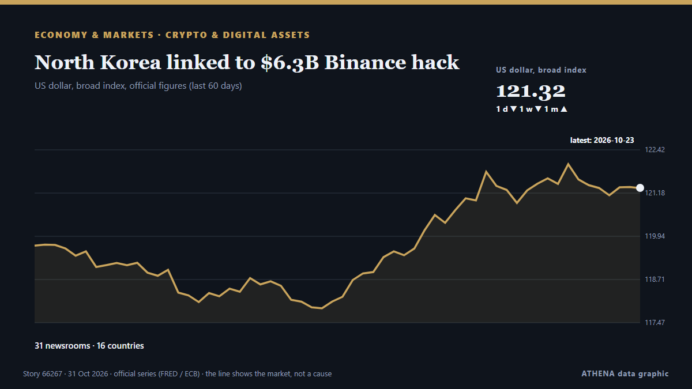

North Korea linked to $6.3B Binance hack

A North Korea-based cybercrime group appears to be behind a $6.3 billion hack of the cryptocurrency exchange Binance, according to two blockchain intelligence firms. из The Hill
Независимые источники: 31 издание в 16 странах, с 30 окт.; первым сообщил Cointelegraph; освещение идёт на спад. ATHENA оценивает риск как низкий (1.7/10), прежде всего из-за тяжести описываемого ущерба и географического и отраслевого охвата. Уверенность — 89 % (высокая); подтверждают независимые источники: 31 издание, средняя надёжность источников — 76 %. СМИ по странам: Соединенные Штаты (12), Великобритания (3), Индия (3). Освещение: с 30 окт. по 31 окт., 37 ч.
Почему это важно: Экономические и рыночные события отражаются на ценах, занятости, стоимости заимствований и инвестиционных решениях.
Что изменилось: 17 новых сообщений от 15 редакций за 24 часа до 31 окт..
Первый заголовок: Binance says $6.3B US hacked in what could be largest cryptocurrency theft ever
Заголовки приводятся на английском языке, как они были опубликованы.
Коротко в цифрах
Отобрано, оценено и написано по опубликованной методологии ATHENA. Ни один редактор не вмешивается в отдельные события. Как это создаётся ›
| 30 Oct 03:47 UTC | 1 |
|---|---|
| 30 Oct 05:47 UTC | 0 |
| 30 Oct 07:47 UTC | 2 |
| 30 Oct 09:47 UTC | 8 |
| 30 Oct 11:47 UTC | 3 |
| 30 Oct 13:47 UTC | 4 |
| 30 Oct 15:47 UTC | 3 |
| 30 Oct 17:47 UTC | 2 |
| 30 Oct 19:47 UTC | 5 |
| 30 Oct 21:47 UTC | 1 |
| 30 Oct 23:47 UTC | 0 |
| 31 Oct 01:47 UTC | 3 |
| 31 Oct 03:47 UTC | 0 |
| 31 Oct 05:47 UTC | 0 |
| 31 Oct 07:47 UTC | 1 |
| 31 Oct 09:47 UTC | 1 |
| 31 Oct 11:47 UTC | 0 |
| 31 Oct 13:47 UTC | 1 |
| 31 Oct 15:47 UTC | 1 |
| 30 Oct 11:13 UTC | 1.6 |
|---|---|
| 30 Oct 11:25 UTC | 0.9 |
| 30 Oct 11:51 UTC | 1.7 |
| 31 Oct 16:32 UTC | 1.7 |
Откуда эти цифры
Значимость
Риск
Уверенность
Освещение — кто сообщил и когда
заголовок в оригинале · открывает источник- Cointelegraph · Соединенные ШтатыBinance hack could accelerate shift to DEXs: Standard Chartered
- The Irish News (Belfast) · ВеликобританияIntelligence firm links North Korea with 6.3 billion-dollar Binance hack
- Times of India · ИндияHackers steal $6.3 billion from Binance in biggest crypto heist ever co-CEO responds
- Gulf News · ОАЭBinance hack: Lazarus group suspected as $6.3b theft rattles traders
- Stuff · Новая ЗеландияReported largest ever hack worth US$6.3B on cryptocurrency exchange linked to North Korea
- Express Tribune · ПакистанFBI and US Secret Service working with Binance after $6.3 billion hack, source says
- Fortune · Соединенные ШтатыSecurity experts are already wondering if North Korea is behind the $6.3 billion Binance heist
- CBS News (World) · Соединенные Штаты$6.3 billion Binance hack likely work of North Korea, experts say
- CBC News · КанадаBinance says $6.3B US hacked in what could be largest cryptocurrency theft ever
- Business Recorder · ПакистанHackers steal $6.3 billion from Binance in record heist blamed on North Korea
- DW English · ГерманияBinance crypto exchange suspends trades over North Korea-linked hack
- The Times of Central Asia · CAS$6.3 Billion Binance Cyberattack Comes as Exchange Expands in Central Asia
- Fast Company · Соединенные ШтатыBinance hack: Bitcoin and other tokens fall as the crypto world is rocked by a historic attack
- NPR World · Соединенные ШтатыBlockchain intelligence firms link North Korea to $6.3B hack on Binance
- PBS NewsHour · Соединенные ШтатыBinance flags 'potential security issue,' says approximately $6.3 billion impacted
- Jamaica Observer · ЯмайкаCrypto platform Binance confirms ‘complex’ US$6.3 billion hack
- Meduza (English) · РоссияNorth Korean hackers linked to Russia suspected in Binance crypto exchange hack
- The Hill · Соединенные ШтатыNorth Korea linked to $6.3B Binance hack
- Express Tribune · ПакистанHackers steal $6.3b from Binance
- TRT World · ТурцияBillions stolen in minutes: Inside world's biggest crypto heists
- Courthouse News · Соединенные ШтатыBlockchain intelligence firms link North Korea to $6.3B hack on Binance
- NDTV · ИндияWhat Is TraderTraitor? North Korea Group Accused Of $6 Billion Binance Heist
- The Canadian Press (via CityNews) · КанадаLong accused of abetting crypto crimes, Binance has now become a victim
- TheJournal.ie · ИрландияHave you ever invested in cryptocurrency?
- Foreign Policy · Соединенные ШтатыThe World’s Biggest Crypto Heist
- The Block · Соединенные ШтатыInside the largest crypto hack on record: How attackers breached Binance for $6.3 billion
- The Hill · Соединенные ШтатыTrump says US looking into Binance hack: 'We don't know' if North Korea responsible
- MyJoyOnline · ГанаCrypto giant Binance attempting to recover $6.3bn stolen in hack linked to North Korea
- Novinite · БолгарияNorth Korea-Linked Hackers Suspected in $6.3 Billion Binance Breach
- BBC News · ВеликобританияWhy North Korea's 'elite' hackers are the prime suspect in major Binance hack
- Korea Herald · Республика КореяN. Korean hackers blamed for record $6.3b Binance cryptocurrency theft: US firm
- The Korea Times · Республика КореяWhat to know about the $6.3 bil. hack on Binance, likely the biggest-ever crypto theft
- NDTV · ИндияInside World's Largest Crypto Heist: How Binance's $6.3 Billion Was Stolen
- France 24 English · ФранцияBinance hit by 6.3 billion dollar crypto theft
- PBS NewsHour · Соединенные ШтатыWhat to know about the $6.3B hack on Binance, likely the biggest-ever crypto theft
- BBC News · ВеликобританияCrypto firm Binance covers 90% of losses after $6.3bn hack